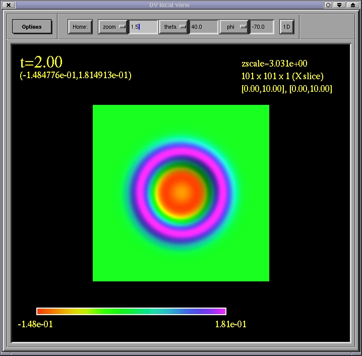

If multiple objects are selected and sent, all corresponding grids will be displayed sequentially in time; i.e., this is how you animate a sequence of grids. An animation can be halted by pressing the escape key. You can also single-step through the grids in a register by first selecting one time (or level or grid), then, while the DV main window is still the active one, press the cursor keys or clickon the up/down arrow buttons just below the Send to local view button.
A short-cut for sending a single time, level or grid within a register is to single click on the corresponding item with the right mouse button.
The default annotation and color coding is as follows. The time of the grid(s) is shown in the upper left corner of the view; directly below this are the minimum and maximum function bounds in parenthesis. Grid functions are converted to a surface plot where both the color and height of the surface denote the magnitude of the grid function. The current function-value to color conversion scale is given by the color bar on the lower right portion of the view. The actual coordinate height of the surface is the magnitude of the function multiplied by some constant scale ("zscale"), the current value of which is displayed in the upper right corner. Below the zscale label is the array size of the grid, and below this the coordinate bounding box of the grid. NOTE: if multiple grids are rendered simultaneously, only the array size and coordinate domain of the last grid that is drawn is shown here.
rotate: left mouse button or right mouse button
translate: middle mouse button or left mouse button & Ctrl key
zoom: left mouse button & middle mouse button or middle mouse button & Ctrl key or left mouse button & Shift key
The view can be reset to a user-definable default by clicking on the Home button. The default is specified via a spherical polar viewing angle theta and phi, and a zoom factor.
Parameters controlling how the surface plot is generated can be specified via the options button on the main window, and are briefly explained here.
Rendering, annotation and screen capture parameters are set by using the Options menu on the local view window, and are explained here (under construction).